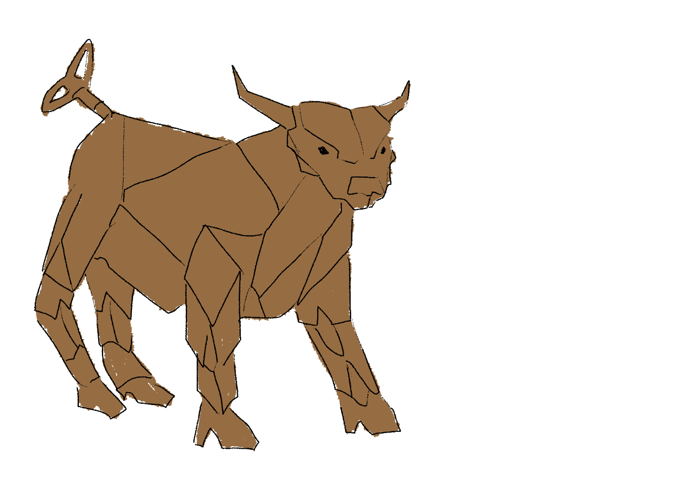

Living is easy when you have a destiny pre-written for you! Mechanisms are always created to fulfill one specific purpose for years and years to come.
There is no need for stupid things like relationships or housing - your family is your fellow machinery and your home is your workplace. Besides, you get the privelege of regular inspections and abundant provisions of fuel in your stable career plan!
Mechanisms are almost always non-humanoid and come in varied forms that suit their respective tasks. Many are used for transportation, construction or other menial labour, but they can also do monotonous bureaucratic work - who needs to actually read documentation if its just the same letters in different order?
Mechs are usually made of all kinds of metals - so is the Judge, - and can legally only be disassembled via the execution press, which almost never happens.